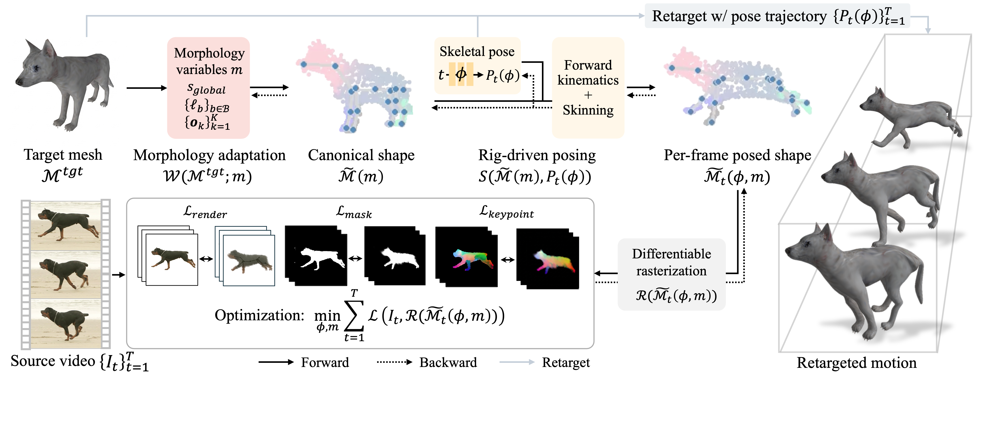

Transferring articulated motion from monocular videos to rigged 3D characters is challenging due to pose ambiguity in 2D observations and morphological differences between source and target. Existing approaches often follow a reconstruct-then-retarget paradigm, tying transfer quality to intermediate 3D reconstruction and limiting applicability to categories with parametric templates. We propose MorphGS, a framework that formulates motion retargeting as a target-driven analysis-by-synthesis problem, directly optimizing target morphology and pose through image-space supervision. A rig-coupled morphology parameterization factorizes character identity from time-varying joint rotations, while dense 2D-3D correspondences and synthesized views provide complementary structural and multi-view guidance. Experiments on synthetic benchmarks and real-world videos show consistent improvements over baselines.

MorphGS formulates video-to-3D motion transfer as a target-driven analysis-by-synthesis problem. Instead of reconstructing the source subject in 3D and retargeting afterward, MorphGS directly optimizes the target character's morphology and pose to reproduce the motion observed in a monocular video.
The target is represented with rig-coupled morphology parameters, including global scale, bone lengths, and local rest-pose offsets, while a time-conditioned pose network predicts per-frame joint rotations and root motion. This factorization separates time-invariant character morphology from time-varying articulated motion.
Optimization is guided by image-space supervision, including rendering losses, dense 2D-3D correspondences, and synthesized-view guidance, enabling motion transfer under source-target morphology gaps and monocular ambiguity.
We present motion transfer comparisons across synthetic benchmarks (MIXAMO, DT4D) and real-world videos. Our method consistently outperforms baselines in both synthetic and real-world videos, spanning diverse categories which include humans, quadrupeds, and non-quadruped animals.
@inproceedings{kim2026morphgs,
title = {MorphGS: Morphology-Adaptive Articulated 3D Motion Transfer from Videos},
author = {Kim, Taeyeon and Na, Youngju and Lee, Jumin and Lee, Sebin and Sung, Minhyuk and Yoon, Sung-Eui},
booktitle = {European Conference on Computer Vision},
year = {2026}
}